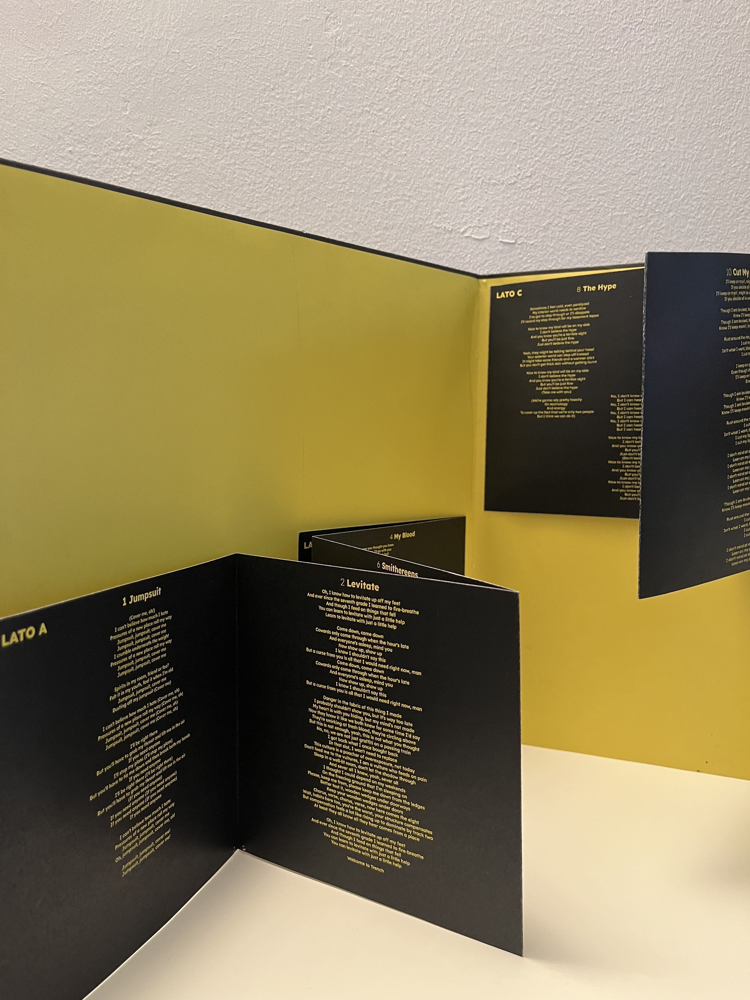
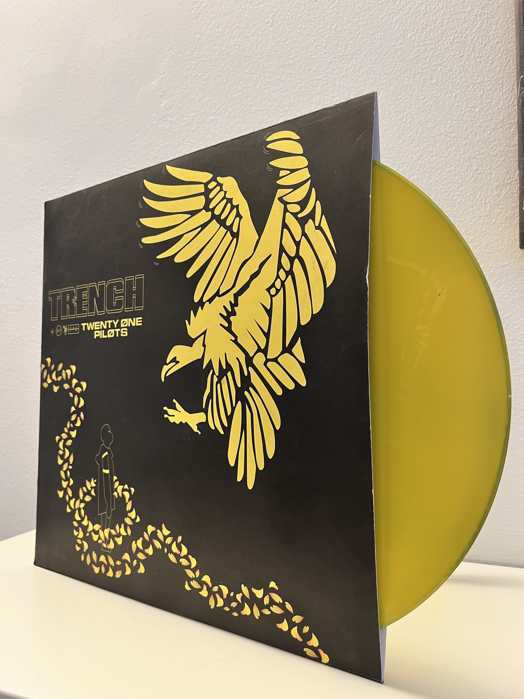
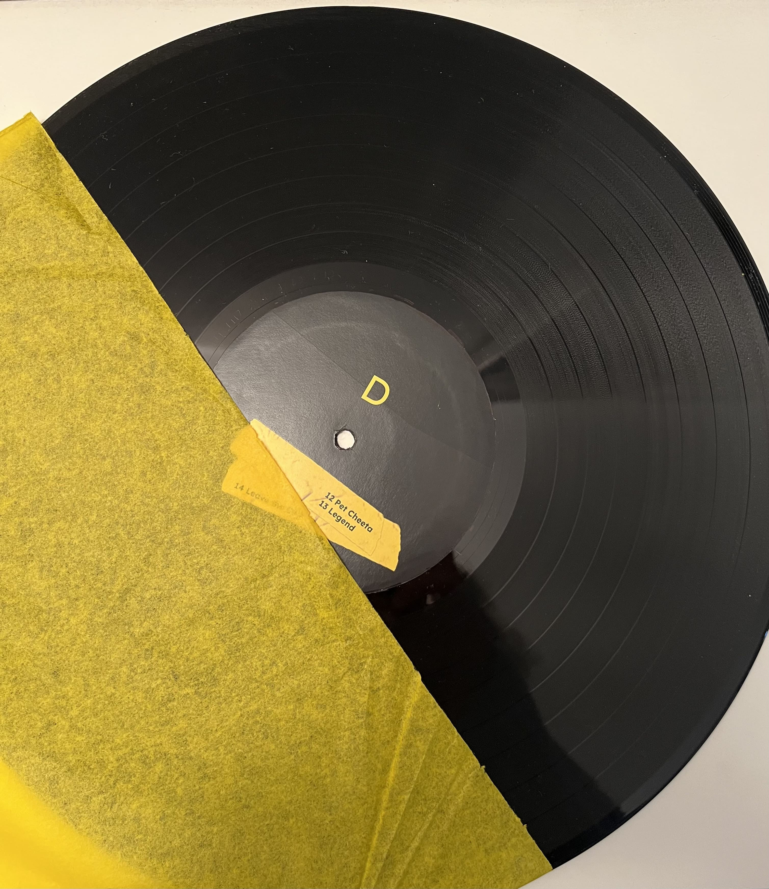
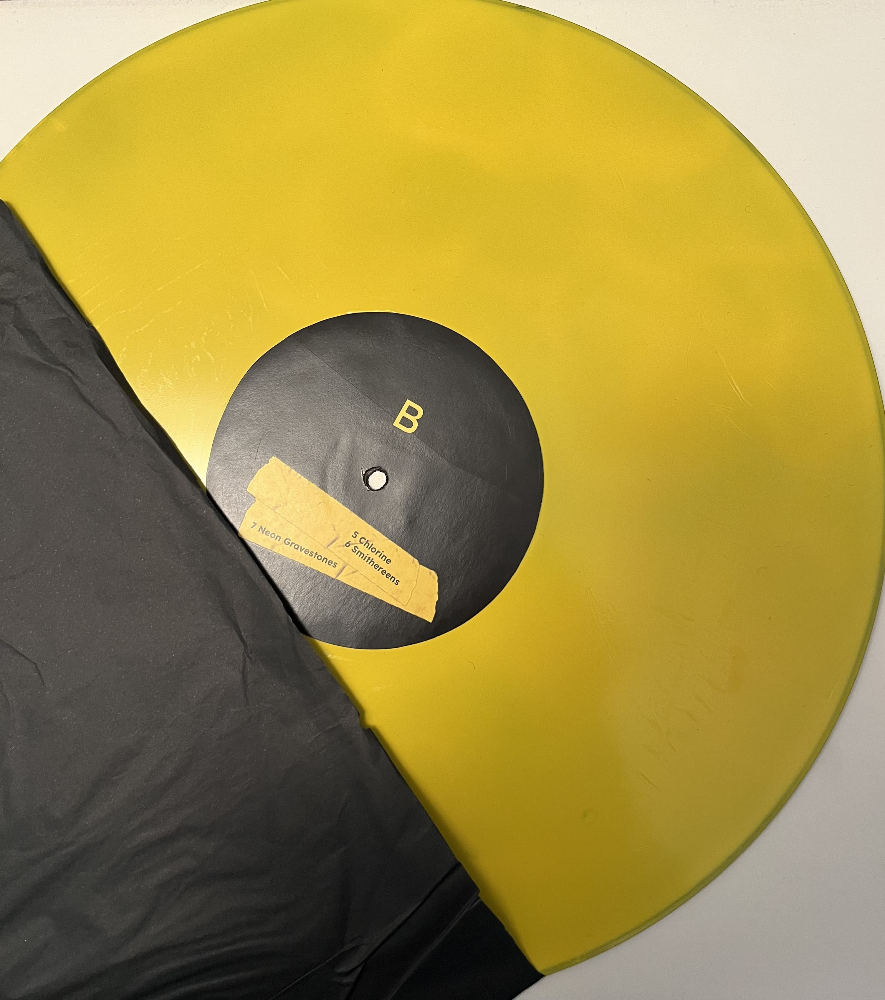

.pdf)
IL CONCEPT ALBUM - TRENCH
Come progetto finale del laboratorio di disegno, è stata assegnata la realizzazione di un concept album. L’obiettivo era progettare un vinile o un CD sviluppato attorno a un tema o a un concetto centrale. Per questo progetto ho scelto di realizzare un vinile per l’album Trench dei Twenty One Pilots. Il progetto ha rappresentato un’occasione per approfondire gli aspetti visivi e tematici del design musicale, traducendo la narrazione e l’atmosfera dell’album in una rappresentazione grafica coerente ed efficace.
Attraverso il progetto grafico, ho cercato di restituire l’essenza di Trench, riflettendone i temi e l’identità visiva sia nella copertina del vinile sia negli elementi di supporto.
Il packaging consiste in un vinile a doppia tasca con dentro i dischi e un poster. A vinile aperto si trovano due leporelli tra loro opposti su cui sono scritti i testi delle canzoni. I dischi interni sono due, ognuno con due lati diversi, uno nero e uno giallo. I titoli delle canzoni sono scritti su una grafica che richiama un pezzo di scotch giallo, simbolo ricorrente nell’immaginario dell’album.
Il retro dell’album è molto sempice, evidenziando solo i nomi delle canzoni di Trench. Il colore giallo ritorna come simbolo significativo, mantenuto in modo coerente all’interno dell’intero concept e del design del packaging.


 2.pdf)

